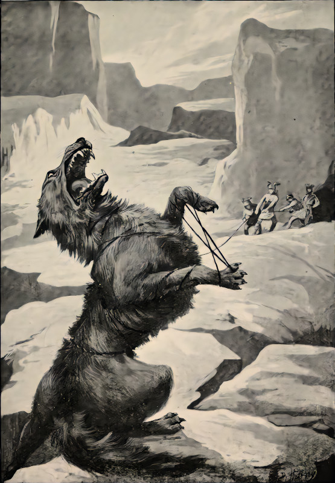

| Fenrir | |
|---|---|
|
 |
|
| Pronunciation | |
| Old Norse: |
Fenrir |
| Modern English: |
Fenrir |
| Relations | |
| Father | Loki |
| Mother | Angrboda |
Fenrir, the Bringer of Ragnarök
Fenrir is a giant wolf, and the son of Loki. The Prose Edda gives much information on Fenrir. From it, we learn that Fenrir is destined to signal the beginning of Ragnarok, for when it begins, he shall break loose and open his maw to devour the sky above and the earth below as he runs. He is to devour Odin, the All-Father, only to have his son Vidar avenge him by slaying Fenrir.
The Gods knew of Fenrir's involvement with Ragnarok, so they decided to chain him up. However, he broke every chain they tried. Thus, the gods had the dwarves create a magic ribbon that he could not break. Not trusting this ribbon, Fenrir only allowed them to tie him up with it if one of the gods would place their hand in his mouth. Tyr, knowing it was a sacrifice that had to be made, agreed. When Fenrir could not break free from the ribbon, he snapped his jaw shut, taking Tyr's hand.